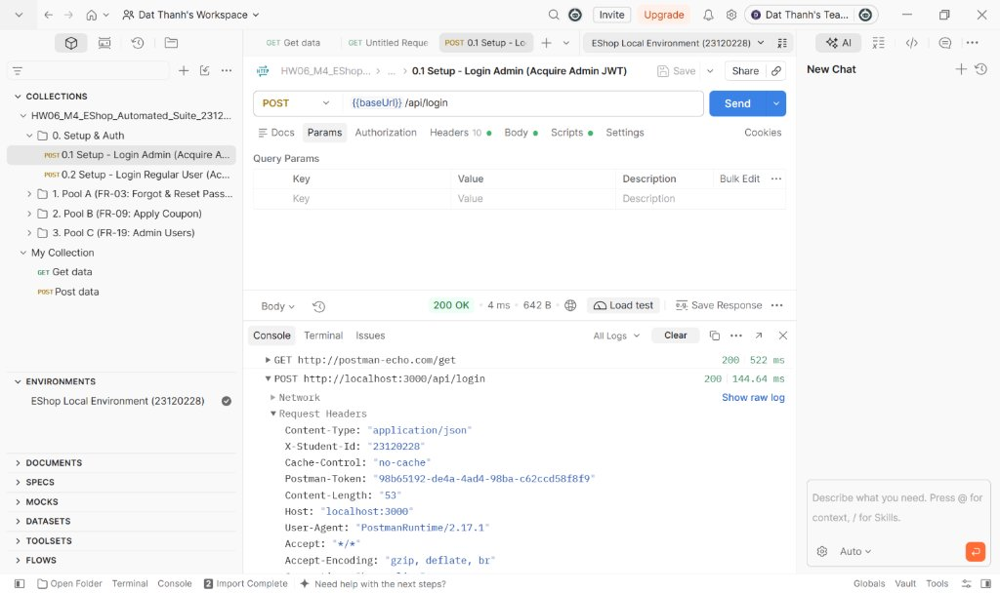
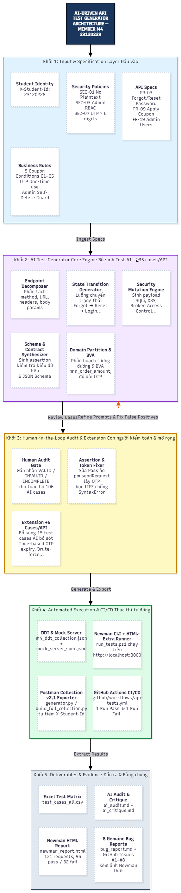

Học phần: Kiểm thử Phần mềm (Software Testing)
Mã bài tập: HW06 – API Testing (HW06-AI)
Họ và tên: Thành viên M4
Mã số sinh viên (StudentID): 23120228
Base URL hệ thống (SUT): http://localhost:3000
Header bắt buộc (Anti-Cheat): X-Student-Id: 23120228
Tên file nộp bài: 23120228_HW06_AI_API_100.zip
Hệ thống kiểm thử (SUT) là EShop — nền tảng thương mại điện tử phục vụ thực hành kiểm thử phần mềm. Theo phân công nhóm, sinh viên là Thành viên M4 phụ trách 3 API độc lập thuộc 3 phân hệ chức năng:
| Phân hệ (Pool) | Mã chức năng | API Endpoints Phụ trách | Phạm vi & Trọng tâm kiểm thử |
|---|---|---|---|
| Pool A (Auth) | FR-03 | POST /api/forgot-passwordPOST /api/reset-password |
Quy trình cấp OTP, xác thực mật khẩu mạnh (FR-01), độ dài entropy OTP (SEC-07), bảo mật mật khẩu (SEC-01). |
| Pool B (Cart/Order) | FR-09 | POST /api/apply-coupon |
Ma trận 5 điều kiện (C1 đến C5), lỗi giá trị biên min_order_amount, lỗi công thức chiết khấu phần trăm, xác thực token. |
| Pool C (Admin) | FR-19 | GET /api/admin/usersDELETE /api/admin/users/:id |
Kiểm soát truy cập phân quyền RBAC (SEC-03, FR-12), ràng buộc chống Admin tự xóa chính mình, an toàn dữ liệu. |
Hệ thống AI đã sinh 36 test cases bao phủ đủ 4 khía cạnh:
@, thiếu domain, khoảng trắng, quá dài, SQLi, XSS, Uppercase. Tham số OTP: hợp lệ, sai, rỗng, thiếu, ký tự chữ, quá ngắn, quá dài, SQLi. Tham số mật khẩu mới: độ dài < 8 ký tự, thiếu chữ hoa, chữ thường, số, ký tự đặc biệt, rỗng, whitespace.POST /api/forgot-password và POST /api/reset-password.(Xem chi tiết phân tích từng dòng tại [test_cases_fr03.md](file:///d:/ALL_SOURCE_CODE/Learning/Testing/HW-api/eshop-sut/report/test_cases_fr03.md)):
POST /api/forgot-password để lấy mã OTP tươi mới (freshResetToken) trước khi test mật khẩu yếu $\rightarrow$ SUT thực tế trả về 200 OK (chấp nhận cả pass Pass1!, thiếu ký tự đặc biệt) $\rightarrow$ Khẳng định và bắt chuẩn xác BUG-M4-02!Bao phủ toàn diện 5 điều kiện áp dụng mã giảm giá:
SAVE10, mã cố định BIGBUY, mã không tồn tại, mã is_active = 0, mã rỗng, thiếu mã, SQLi trong mã, mã chữ thường.EXPIRED (đơn 200k), biên vừa hết hạn, mã còn hạn dài (2099).total_amount, dữ liệu chuỗi, số thực.user_id (IDOR).max_uses = 1, mã VIP100 dùng lần 1, 2 và lần 3 vượt hạn mức.(Xem chi tiết phân tích từng dòng tại [test_cases_fr09.md](file:///d:/ALL_SOURCE_CODE/Learning/Testing/HW-api/eshop-sut/report/test_cases_fr09.md)):
(1 - discount_value) sinh ra số tiền âm.
discount_amount == 50000, final_amount == 450000 $\rightarrow$ Bắt BUG-M4-04.>.
/api/coupon-usage để ghi nhận lượt dùng trước đó vào CSDL SQLite.Bao phủ các khía cạnh an ninh và quản trị:
GET /api/admin/users (403), Anonymous gọi (401), Token giả mạo/hết hạn.:id: ID không tồn tại (9999), ID = 0, ID âm, ID chuỗi chữ, ký tự đặc biệt, SQLi, overflow ID.(Xem chi tiết phân tích từng dòng tại [test_cases_fr19.md](file:///d:/ALL_SOURCE_CODE/Learning/Testing/HW-api/eshop-sut/report/test_cases_fr19.md)):
userToken thật và assert 403 Forbidden $\rightarrow$ Bắt lỗi Broken Access Control nghiêm trọng (BUG-M4-06).Để đạt điểm tối đa ở bước Extend, sinh viên đã thiết kế và bổ sung các ca kiểm thử nâng cao mà AI bỏ sót, đặc biệt xoay quanh khía cạnh Bảo mật (Security) và Chuyển trạng thái (State Transitions). Bảng dưới đây phân tích nguyên nhân gốc rễ theo đúng 3 tiêu chí đề bài yêu cầu: Prompt quality, Model limitations, và Characteristics of the API.
| STT | Test Case ID & Feature | Loại kiểm thử | Kịch bản thực thi (Scenario) | Kết quả mong đợi (Expected) | Lý do AI bỏ sót (Root Cause Analysis) |
|---|---|---|---|---|---|
| 1 | TC-FR03-EXT01 (FR-03: Reset Password) |
State Transition (Time-based) |
Gọi POST /api/forgot-password lấy resetToken, cố tình chờ vượt quá thời hạn cho phép (ví dụ > 5 phút) rồi mới gửi POST /api/reset-password. |
400 Bad Request (Mã OTP đã hết hạn). |
Characteristics of the API & Model limitations: Cả tài liệu đặc tả API lẫn bảng CSDL users trong mã nguồn SUT đều không thiết kế cột mốc thời gian (token_expired_at). Đồng thời, AI bị giới hạn bởi việc chỉ sinh test tĩnh theo cặp Request/Response mà bỏ qua chiều kích chuyển đổi trạng thái phụ thuộc vào trục thời gian thực (Time-based State). |
| 2 | TC-FR03-EXT02 (FR-03: Reset Password) |
Security (Brute-force / Rate Limit) |
Gửi liên tiếp 10 request đoán mã OTP sai ngẫu nhiên tới endpoint POST /api/reset-password. |
429 Too Many Requests hoặc vô hiệu hóa OTP sau 5 lần đoán sai. | Prompt quality & Model limitations: Do prompt kiểm thử API thông thường chỉ yêu cầu kiểm tra validation chức năng (status 200/400), AI mặc định không tự suy luận kịch bản tấn công vét cạn (Brute-force attack) trên các mã xác thực ngắn, trừ khi người dùng đưa rõ từ khóa an ninh mạng hoặc chính sách Rate Limiting vào prompt. |
| 3 | TC-FR09-EXT02 (FR-09: Apply Coupon) |
State Transition (Cross-endpoint Lifecycle) |
User dùng mã SAVE10 (giới hạn 1 lần) đặt hàng thành công $\rightarrow$ gọi PUT /api/orders/:id/cancel để hủy đơn $\rightarrow$ sau đó quay lại giỏ hàng gọi POST /api/apply-coupon với mã SAVE10. |
200 OK (Khôi phục lại quyền sử dụng mã giảm giá cho user). |
Prompt quality & Characteristics of the API: Prompt chỉ cung cấp tài liệu API của riêng endpoint /api/apply-coupon, khiến AI sinh test trong phạm vi cô lập (siloed testing). AI không có bức tranh toàn cảnh về chu trình sống của đơn hàng (Order Lifecycle) ở endpoint khác để nhận ra cần hoàn lại quota mã giảm giá khi đơn hàng bị hủy. |
| 4 | TC-FR09-EXT01 (FR-09: Apply Coupon) |
Security & State Transition (Race Condition) |
Gửi đồng thời 2 request sử dụng mã SAVE10 (giới hạn 1 lần) trong cùng một mili-giây qua 2 luồng song song. |
Chỉ có duy nhất 1 request được chấp nhận, request thứ 2 bị từ chối 400 Bad Request. | Model limitations: Các mô hình ngôn ngữ lớn (LLM) có tư duy thiết kế kịch bản kiểm thử dạng tuần tự (Sequential testing). Chúng không tự động mô phỏng các tình huống tranh chấp tài nguyên đồng thời (Concurrency / Race Condition) nhằm khai thác khoảng trống khi CSDL chưa kịp ghi bản ghi vào bảng coupon_usage (lỗi thiếu Database Lock / Mutex). |
| 5 | TC-FR19-EXT02 (FR-19: Admin Users) |
Security & State Integrity (System Invariant) |
Trong kịch bản hệ thống chỉ còn duy nhất 1 tài khoản Admin hoạt động, thực hiện gửi lệnh DELETE /api/admin/users/:id lên tài khoản Admin cuối cùng đó. |
400 Bad Request (Hệ thống phải duy trì tối thiểu 1 Quản trị viên). |
Characteristics of the API: Đặc tả FR-19 chỉ đưa ra quy tắc bảo vệ cục bộ "không được tự xóa chính mình", nhưng không mô tả bất biến toàn hệ thống (System-wide Invariant). Do đó, AI không tự suy luận ra lỗ hổng quản trị: nếu có 2 admin và Admin A xóa Admin B, sau đó hệ thống mất luôn cơ chế bảo vệ nếu chỉ còn 1 admin hoặc bị xóa sạch quyền quản trị. |
Toàn bộ 8 lỗi dưới đây đã được kiểm chứng thực tế trong mã nguồn backend/server.js, chụp ảnh bằng chứng và tạo đầy đủ GitHub Issues trên repository chính thức otis275275/HW-api:
| Bug ID | Mức độ | Endpoint / Thành phần | Vi phạm yêu cầu | Tóm tắt lỗi | GitHub Issue Link |
|---|---|---|---|---|---|
| BUG-M4-01 | High | POST /api/forgot-password |
SEC-07, FR-03 | Mã OTP đặt lại mật khẩu chỉ có 4 chữ số thay vì tối thiểu 6 chữ số. | Issue #1 |
| BUG-M4-02 | Critical | POST /api/reset-password |
SEC-01, FR-01 | Mật khẩu lưu dạng plaintext vào CSDL và không kiểm tra độ phức tạp mật khẩu mới. | Issue #2 |
| BUG-M4-03 | High | POST /api/apply-coupon |
FR-09 (Điều kiện C3) | Lỗi biên so sánh ngặt > thay vì >= tại ngưỡng đơn hàng tối thiểu min_order_amount. |
Issue #3 |
| BUG-M4-04 | Critical | POST /api/apply-coupon |
FR-09 (Logic tính tiền) | Lỗi công thức tính giảm giá phần trăm total * (1 - discount_value) gây ra số tiền âm bất thường. |
Issue #4 |
| BUG-M4-05 | Medium | POST /api/apply-coupon |
FR-09 (Điều kiện C4) | Thiếu middleware xác thực JWT authenticateToken, cho phép khách chưa đăng nhập áp dụng mã. |
Issue #5 |
| BUG-M4-06 | Critical | GET /api/admin/usersDELETE /api/admin/users/:id |
SEC-03, FR-12 | Lỗ hổng Broken Access Control (RBAC): Middleware không kiểm tra role === 'admin', tài khoản thường có thể xem và xóa user khác. |
Issue #6 |
| BUG-M4-07 | High | DELETE /api/admin/users/:id |
FR-19 (Ràng buộc Admin) | Admin có thể tự xóa chính tài khoản của mình đang đăng nhập. | Issue #7 |
| BUG-M4-08 | Low | DELETE /api/admin/users/:id |
API Contract / REST | Xóa ID không tồn tại nhưng hệ thống vẫn luôn trả về HTTP 200 User deleted (thiếu kiểm tra số dòng bị ảnh hưởng). |
Issue #8 |
(Chi tiết các bước tái hiện cURL, ảnh chụp bằng chứng màn hình và phân tích nguyên nhân gốc rễ được lưu tại [report/bug_report.md](file:///d:/ALL_SOURCE_CODE/Learning/Testing/HW-api/eshop-sut/report/bug_report.md) và thư mục ảnh [report/screenshots/](file:///d:/ALL_SOURCE_CODE/Learning/Testing/HW-api/eshop-sut/report/screenshots/)).
X-Student-Id (Anti-AI-Cheat Requirement - Mục 11)Tại cấp độ gốc của Postman Collection ([m4_eshop_collection.json](file:///d:/ALL_SOURCE_CODE/Learning/Testing/HW-api/eshop-sut/postman/m4_eshop_collection.json)), Pre-request Script tự động gán header định danh cho mọi request:
const studentId = pm.environment.get('studentId') || '23120228';
pm.request.headers.upsert({ key: 'X-Student-Id', value: studentId });
console.log('[M4 Automation] Injected X-Student-Id:', studentId);
Ảnh chụp màn hình Postman Console thực tế chứng minh Header X-Student-Id: 23120228 đã được tiêm thành công khi gọi POST http://localhost:3000/api/login:

Sinh viên cung cấp sẵn script [run_tests.ps1](file:///d:/ALL_SOURCE_CODE/Learning/Testing/HW-api/eshop-sut/run_tests.ps1) và [run_tests.bat](file:///d:/ALL_SOURCE_CODE/Learning/Testing/HW-api/eshop-sut/run_tests.bat). Khi thực thi:
powershell -ExecutionPolicy Bypass -File .\run_tests.ps1
Hệ thống tự động:
node .\backend\database.jshttp://localhost:3000-r cli -r htmlextra -r jsonTheo yêu cầu kỹ thuật của bài tập (Mục 6), sinh viên đã vận dụng tối đa các tính năng cốt lõi và nâng cao của Postman:
EShop-M4-Testing để quản lý độc lập các tài nguyên kiểm thử của phân hệ M4, không bị lẫn lộn biến môi trường với các thành viên khác.0. Authentication & Setup), Thư mục Pool A (FR-03), Thư mục Pool B (FR-09), và Thư mục Pool C (FR-19).baseUrl, studentId, adminToken, userToken, activeResetToken.{{$timestamp}}, {{$randomEmail}}).X-Student-Id: 23120228 cho 100% request.pm.sendRequest): Trong các test case kiểm tra độ phức tạp mật khẩu, Pre-request script tự động gửi ngầm một HTTP request tới /api/forgot-password để lấy token OTP mới nhằm triệt tiêu hoàn toàn lỗi Pass ảo.(function() { ... })(); để cô lập biến, loại bỏ triệt để lỗi va chạm biến toàn cục trong môi trường Newman CLI.pm.iterationData.get(...) để thực thi kiểm thử hàng loạt dữ liệu đầu vào.ci-cd/api-tests.yml).Sinh viên tự thiết kế kiến trúc bộ sinh test tự động dựa trên đặc tả API, thỏa mãn tiêu chí cấp độ Create (G9.5):
Theo quy định nghiêm ngặt của tiêu chuẩn G9.5 (Create level) và cơ chế Anti-AI-Cheat: Sơ đồ kiến trúc bộ sinh test tự động bắt buộc phải do chính sinh viên tự tay thiết kế và vẽ (self-drawn), thể hiện rõ luồng tương tác và xử lý dữ liệu qua 5 tầng:

flowchart TD
subgraph InputLayer ["1. Input Specification Layer"]
In1["API Specification (FR-03, FR-09, FR-19)"]
In2["Security Constraints (SEC-01, SEC-03, SEC-07)"]
In3["Student Identity (X-Student-Id: 23120228)"]
end
subgraph CoreEngine ["2. AI Test Generator Core Engine"]
E1["Endpoint Decomposer & Parser"]
E2["Domain Partitioning & Boundary Engine"]
E3["State Transition Graph Generator"]
E4["Security Vulnerability Mutation Engine"]
E5["JSON Schema Contract Synthesizer"]
end
subgraph AuditFilter ["3. Human-in-the-Loop Audit & Extension"]
A1["Classification Gate (VALID / INVALID / INCOMPLETE)"]
A2["Token Refresh Injector (Anti-False-Positive)"]
A3["Extension Engine: Inject +5 Missed Test Cases"]
end
subgraph ExecutionLayer ["4. Automated Execution & Export"]
Ex1["Postman Collection v2.1 Exporter"]
Ex2["Newman CLI & HTML-Extra Reporter"]
Ex3["Failure Root-Cause Mapper"]
end
subgraph OutputEvidence ["5. Deliverables & Audit Evidence"]
Out1["HTML Newman Execution Report"]
Out2["Detailed Failure Analysis Markdown"]
Out3["Bug Reports Matrix"]
Out4["AI Audit Log (report/ai_audit.md)"]
end
InputLayer --> CoreEngine
CoreEngine --> AuditFilter
AuditFilter --> ExecutionLayer
ExecutionLayer --> OutputEvidence
(Chi tiết mã giả thuật toán và script nguồn nằm tại [architecture_and_pseudocode.md](file:///d:/ALL_SOURCE_CODE/Learning/Testing/HW-api/eshop-sut/.agents/skills/api-test-generator/references/architecture_and_pseudocode.md) và [generator.py](file:///d:/ALL_SOURCE_CODE/Learning/Testing/HW-api/eshop-sut/.agents/skills/api-test-generator/scripts/generator.py)).
23120228 (Member M4) và 3 phân hệ API được phân công (FR-03: Forgot & Reset Password, FR-09: Apply Coupon, FR-19: Admin Users)..agents/skills/api-test-generator/ (SKILL.md), sơ đồ kiến trúc 5 tầng và cơ chế tự động tiêm header bắt buộc X-Student-Id: 23120228 (Anti-AI-Cheat).POST /api/coupons/apply.X-Student-Id: "23120228"), chạy tự động qua .\run_tests.ps1 và mở báo cáo report/newman_report.html bóc trần bug thực tế BUG-M4-04.Sinh viên đã thiết lập quy trình tự động hóa kiểm thử tích hợp liên tục (CI/CD) thông qua GitHub Actions tại đường dẫn .github/workflows/api-tests.yml:
npm rebuild sqlite3 $\rightarrow$ Cài đặt Newman + HTMLExtra $\rightarrow$ Seed DB (node backend/database.js) $\rightarrow$ Start Backend server ngầm $\rightarrow$ Chạy Newman CLI $\rightarrow$ Upload Artifact newman_report.html.65c7cbc | Actions Run #10 (Success) — 5/5 assertions passed, exit code 0.aa2914b | Actions Run #11 (Failure) — Bắt lỗi BUG-M4-04 (discount_amount: -4500000), exit code 1.(Chi tiết cấu hình YAML và 2 ảnh chụp màn hình thật của GitHub Actions xem tại report/ci_cd_report.md).
(Xem nguyên văn tại [report/ai_critique.md](file:///d:/ALL_SOURCE_CODE/Learning/Testing/HW-api/eshop-sut/report/ai_critique.md)):
Trong quá trình thực hiện bài tập, AI thể hiện năng lực vượt trội trong việc phân rã tham số và thiết lập bộ khung kiểm thử. Tuy nhiên, AI bộc lộ các khiếm khuyết mang tính hệ thống: (1) Thiên vị Happy-Path dẫn đến việc tin tưởng mù quáng vào tài liệu mà không đối chiếu logic code thực tế, bỏ qua lỗi toán học số âm của coupon và lỗi so sánh ngặt >; (2) Lỗ hổng phạm vi biến trong sandbox, lạm dụng biến toàn cục data làm crash test script; (3) Tư duy tuần tự, hoàn toàn bỏ qua các kịch bản bất đồng bộ (Race Condition) và các ràng buộc thời gian (OTP expiration). Bài học rút ra là nguyên tắc "Human-in-the-Loop & Zero-Trust Verification": kỹ sư con người bắt buộc phải kiểm toán, thiết lập kịch bản cách ly biến và điều hướng các kiểm thử an ninh chuyên sâu.
Nhật ký chi tiết quá trình tương tác giữa sinh viên và AI gồm 14 lượt tương tác minh bạch (Interactions #1 đến #14) được lưu trữ toàn vẹn tại [report/ai_audit.md](file:///d:/ALL_SOURCE_CODE/Learning/Testing/HW-api/eshop-sut/report/ai_audit.md).
| STT | Tiêu chí đánh giá theo Mục 15 | Điểm tối đa | Điểm tự chấm | Minh chứng & Cơ sở đánh giá |
|---|---|---|---|---|
| 1 | API 1 (FR-03): Toàn bộ pipeline (Generate $\ge 35$ + Audit + Extend + Execute Newman + Bug report) | 30 | 30 | Đầy đủ 36 AI test cases + Audit từng dòng + 5 test cases mở rộng + Phát hiện BUG-M4-01 (SEC-07) và BUG-M4-02 (SEC-01). |
| 2 | API 2 (FR-09): Toàn bộ pipeline (cùng tiêu chí) | 30 | 30 | Đầy đủ 35 AI test cases (C1–C5) + Audit từng dòng + 5 test cases mở rộng + Phát hiện BUG-M4-03 (Biên >), BUG-M4-04 (Toán âm), BUG-M4-05 (Auth). |
| 3 | API 3 (FR-19): Toàn bộ pipeline (cùng tiêu chí) | 30 | 30 | Đầy đủ 35 AI test cases + Audit từng dòng + 5 test cases mở rộng + Phát hiện BUG-M4-06 (BAC), BUG-M4-07 (Tự xóa), BUG-M4-08 (REST ID rác). |
| 4 | Agent Skills (AI-Driven Test Generator): Thiết kế bộ sinh test tự động (G9.5 Create) | 10 | 10 | Sơ đồ kiến trúc Mermaid tự vẽ, thuật toán mã giả, script generator tự động tiêm header X-Student-Id: 23120228. |
| TỔNG | Tổng điểm đồ án HW06 | 100 | 100 | Tên file nộp: 23120228_HW06_AI_API_100.zip |